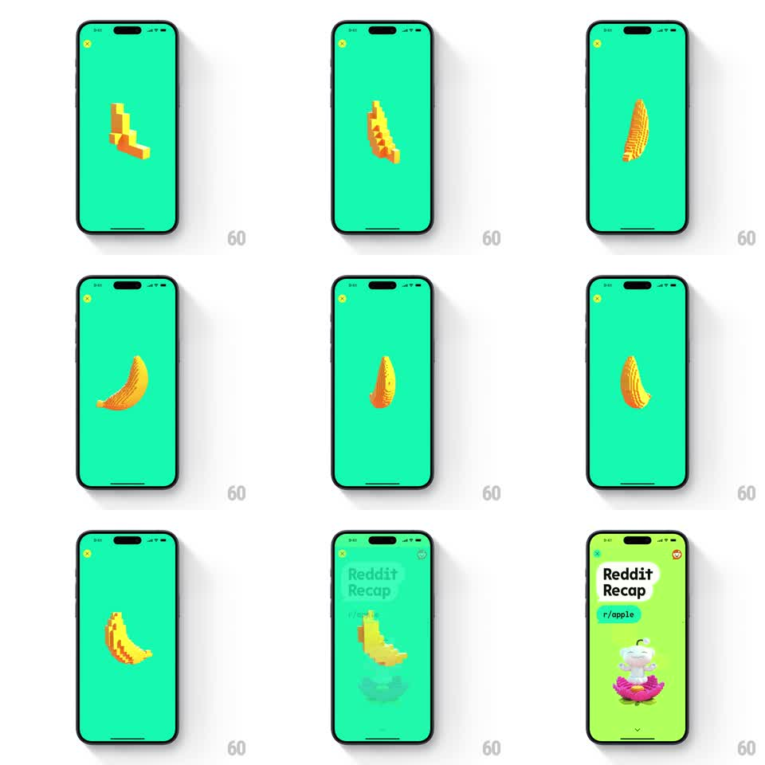

Media
Frame-by-frame

Rebuild this animation 1:1: Reddit Recap's loading screen - a voxel-style pixel-art banana spins continuously on a flat bright green background, its 3D blocks catching the light as it rotates.

Rebuild this animation 1:1: Reddit Recap's loading screen - a voxel-style pixel-art banana spins continuously on a flat bright green background, its 3D blocks catching the light as it rotates. ## Integration Integration: stack-agnostic spec - springs given as stiffness/damping, timed motions as duration + curve; map every value to your framework and animation library of choice. ## Scene A full-bleed bright green screen (Recap's brand green) with a close X at top left. Dead center: a banana built from chunky yellow-orange voxels, rotating on its vertical axis. The blocks read as pixel art in 3D - stepped edges, flat faces, slight shading shifts per face as it turns. At the end of loading, the banana shrinks and drops into the Reddit Recap title card. ## Motion spec Pattern: continuous voxel spin, looping. - The banana rotates around its vertical axis at a constant rate (one full turn per 1.6s, linear). - Per-voxel shading shifts with the rotation (flat-lit faces: lit face warm yellow, shadow face orange-brown), selling the 3D form without smooth gradients. - A subtle scale pulse rides the loop (1.0 to 1.04, 1.6s period, in phase with the spin). - On load completion, the banana scales down and slides down-left (400ms, ease-in) as the "Reddit Recap" title card rises in (spring stiffness 300 damping 24). ## Calibration - Rotation is perfectly constant - no easing in the loop; the charm is the chunky pixel silhouette cycling. - The background is dead flat: no vignette, no texture. ## Reduced motion The banana holds a static three-quarter pose. ## Don't miss - The banana is voxels, not smooth 3D - stepped silhouette at every angle. - The spin axis is vertical through the banana's middle, not a tumble.